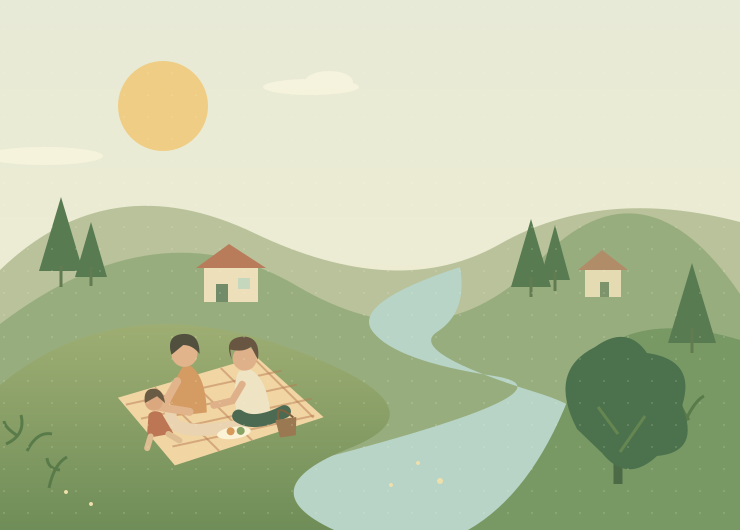
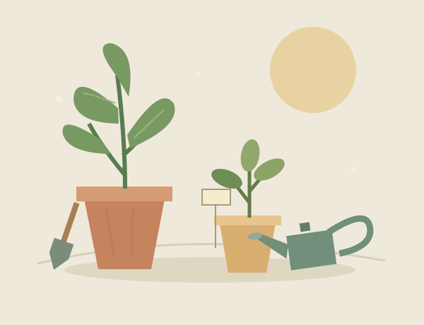

HAMILTON & WAIKATO · 从身边开始周末，不必远行。
周末，不必远行。
好时光就在附近。
带孩子出去走走，发现一场小活动，
或留在家里，照顾一方小花园。
✳少一点做攻略的时间，多一点一起生活的时光。

✳ Little adventures.Lovely weekends.
↟ A little closer to home
A WEEKEND, YOUR WAY
✳ 给生活留一点空白这周末，想怎么过？
从附近开始，挑一个适合全家人的小计划。
↟
这个范围里暂时没有合适的样本
试着扩大距离或取消筛选，再看看附近有什么。
信息来自各官网与主办方页面，最后核查 2026-11-03；距离为直线距离。开放时间与票价可能变动，出发前请以官网为准。
WEEKEND WEATHER演示天气 · 非实时
天气，也一起考虑。
出门前看一眼，给周末留个备选。
周六21° / 12°
晴间多云
周日18° / 11°
可能有阵雨
晴天去户外，
雨天也有好安排。
雨天也有好安排。
SLOW DAYS, GREEN THINGS不出门的周末，
不出门的周末，
也能长出一点快乐。
一个小花盆，就是亲子时光的起点。
去看看花园灵感 →
A LITTLE GARDEN, A LITTLE JOY
把周末，种进生活里。
不用一整个花园。从一盆植物、一次观察开始。
园艺栏目样本 · 种植内容待本地核查这个周末，选一个小任务
下面是栏目体验任务，不是已核实的当季种植建议。
本周的小进展：0 / 3
YOUR GARDEN NOTEBOOK